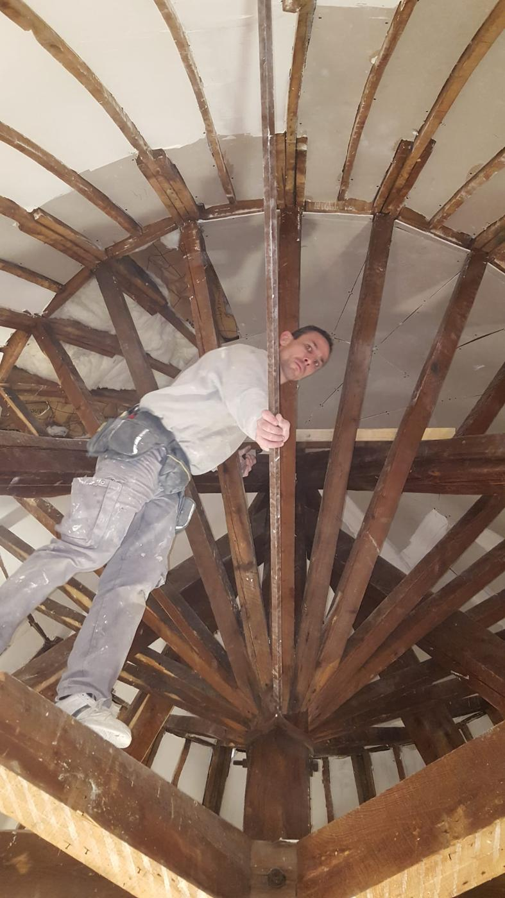

Plâtrerie, peinture, isolation et sols autour de Vichy
Artisan depuis 2016, Jefferson Gonon rénove maisons, appartements et bâtiments anciens. Un seul interlocuteur, de la cloison à la dernière couche de peinture.



Nos métiers
Quatre métiers réunis chez un même artisan. Vous n'avez pas à coordonner plusieurs entreprises : les étapes s'enchaînent dans le bon ordre.
Tous nos services
Plâtrerie et plafonds
Cloisons, doublages, faux plafonds, plâtre traditionnel et moulures.
Découvrir
Peinture
Murs, plafonds et boiseries, avec une vraie préparation des supports.
Découvrir
Isolation
Combles, murs et planchers, avec des isolants adaptés à votre logement.
Découvrir
Sols et murs
Parquet, vinyle, carrelage, papier peint et toile de verre.
Découvrir
Un artisan qui connaît le bâti de la région
Petit-fils d'un peintre qui travaillait déjà sur les façades Art nouveau de Vichy, Jefferson Gonon a fondé JG Concept Rénovation après huit ans dans de grandes entreprises du bâtiment. Il suit lui-même chaque chantier.
- Un seul interlocuteurLe même contact du devis à la réception des travaux.
- Des chantiers propresSols et mobilier protégés, nettoyage et évacuation des déchets compris.
- Le respect du bâti ancienCharpentes, moulures et plâtres d'époque restaurés avec les bonnes techniques.
Comment se passe un chantier
- Visite gratuiteNous venons voir les lieux sous 48 h, sans engagement.
- Devis détailléRemis sous 72 h, poste par poste, avec un prix ferme.
- Choix des matériauxCouleurs, finitions et isolants choisis avec vous.
- TravauxChantier protégé et propre, mené selon les normes DTU.
- RéceptionVisite finale ensemble, nettoyage et suivi pendant un an.
Un dégât des eaux ?
Plafond taché, peinture qui cloque, parquet gondolé : nous faisons le constat, chiffrons les travaux pour votre assureur et remettons tout en état.
Voir la remise en état- Constat rapide avec photos pour l'expert
- Devis détaillé transmis à votre assurance
- Séchage et traitement avant les travaux
- Remise en état des plâtres, peintures et sols
Ce qu'en disent nos clients
Quel plaisir de collaborer avec monsieur Gonon, très professionnel, efficace, très à l'écoute, son but premier la satisfaction de ses clients. Travail soigné et de qualité. Je recommande fortement !
Auto-entrepreneur très sérieux. Un très bon rapport qualité/prix. Travaux réalisés dans les temps, plus des conseils déco sympas ! Un grand merci pour les petits à-côtés, comme vérifier mes tuiles après l'orage de grêle.
Merci encore à JG Concept Rénovation pour son intervention. Personne agréable, à l'écoute, très professionnelle. Nous vous le recommandons.
Où nous intervenons
Basés à Saint-Rémy-en-Rollat, nous travaillons dans les 167 communes à moins de 30 km de Vichy, pour les particuliers, les syndics de copropriété et les professionnels.
Votre commune est-elle couverte ?Un projet de rénovation ? Parlons-en.
Nous venons voir les lieux gratuitement et vous remettons un devis détaillé sous 72 heures.